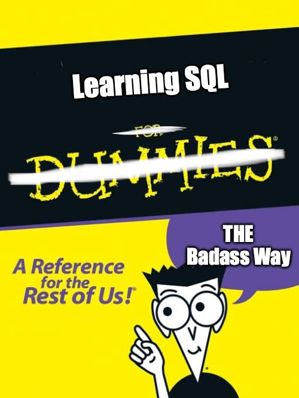

Learning SQL the Badass Way

Learning SQL the badass way is work in progress, keep that in mind if you start reading on these pages.
Preface
Learning SQL the badass way shows you the basic commands to manage tables and data with SQL. I assume that you are familiar with R (or other programming languages) to manipulate data. For this reason, this page only summarizes main idiosyncrasies of SQL, not concepts that you probably know from any other programming experience.
I made the experience that learning new things always takes a lot of time and often I have the impression that many courses are designed without taking your personal experience into account. What a surprise, I can read and write some SQL code even I have no idea what SQL does and I guess you can too! This book is the result of this experience and gives a quick and dirty introduction, assuming that you have coding experience and I do not have to explain why we want to wrangle data in the first place.
If you do not have this impression or if you want to learn SQL in a proper way, close this book. Go and find your way to a real SQL course or some other resources. However, if you are bored from long introduction what data is, why we need to learn how to wrangle data or other common aspects that come along the data science journey, feel free to join my SQL journey.
As we already know, learning SQL is beneficial but maybe we need more motivational input. ChatGTP gives us the following reasons why we should learn SQL even if you are fluent in a language such as R:
Efficient data management: SQL is designed to work with relational databases, which are ideal for managing large amounts of structured data. By learning SQL, R users can efficiently query, retrieve and manage data from databases using SQL commands, making their data analysis tasks more efficient.
Collaborative work: SQL is a common language used by data analysts and data engineers, making it easier to collaborate and share data between different teams. By learning SQL, R users can communicate more effectively with other data professionals and work collaboratively on projects.
Integration with R: R users often work with data that is stored in databases, and SQL provides a way to query and retrieve data from these databases directly into R. This integration allows R users to take advantage of the power of SQL for data management, while still working with their preferred R environment.
Advanced data manipulation: SQL provides powerful features for data manipulation, including filtering, sorting, aggregating and joining data from multiple tables. By learning SQL, R users can take advantage of these advanced features to manipulate their data in more sophisticated ways.
Job market demand: SQL is a widely used skill in the data analytics job market. By learning SQL, R users can broaden their skillset and increase their job market competitiveness.
In addition, ChatGTP also helps us to get an overview about the most important R packages that are commonly used for working with SQL, including:
dplyr: A powerful package for data manipulation that can connect to various SQL databases and perform operations such as filtering, grouping, and joining (Wickham et al. 2023).DBI: An R package that provides a common interface for connecting to various SQL databases (, Wickham, and Müller 2022).RMySQLandRSQLite: Packages that provide an interface for connecting to MySQL and SQLite databases, respectively (Ooms et al. 2022; Müller et al. 2023).RJDBC: A package that provides a JDBC interface for connecting to various databases, including Oracle, Microsoft SQL Server, and PostgreSQL (Urbanek 2022).RODBC: A package that provides an ODBC interface for connecting to various databases, including Microsoft SQL Server and PostgreSQL (Ripley and Lapsley 2022).sqldf: A package that allows you to run SQL queries on data frames in R (Grothendieck 2017).
Overall, the choice of which package to use will depend on the specific database you’re working with and your preferred interface. However, these packages should provide a good starting point for working with SQL in R, but first we need to outline some SQL basics.